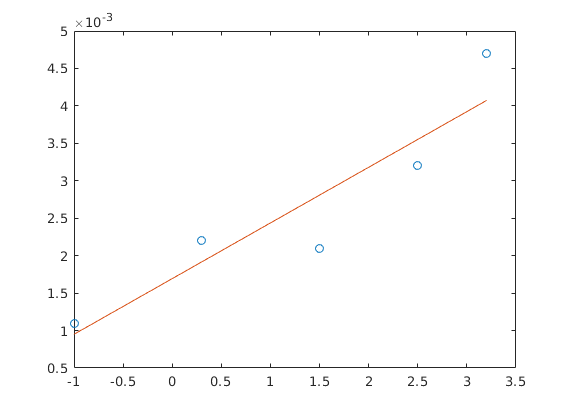
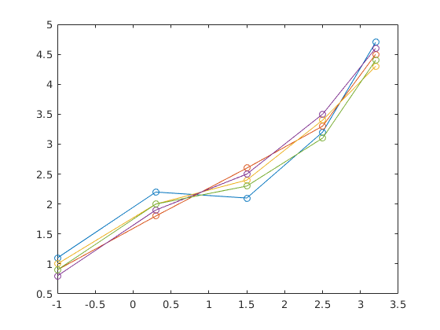
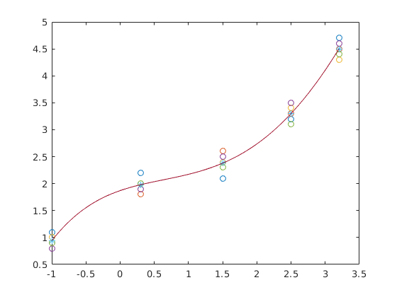
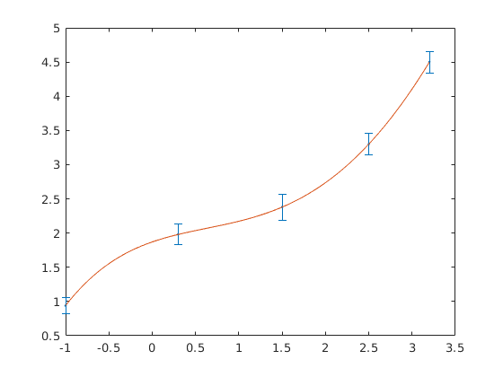
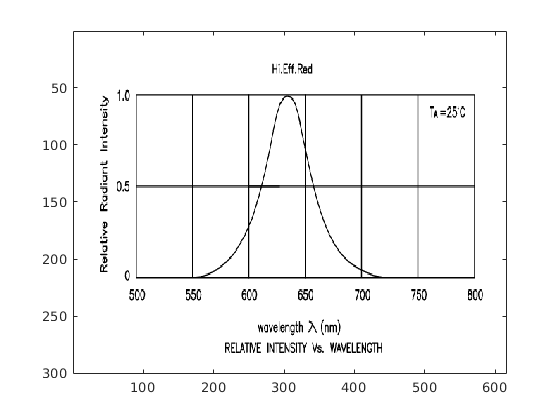
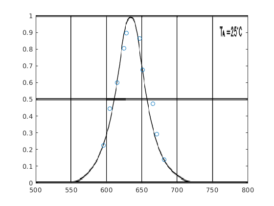

Contents
%-- 02/04/2020 02:30:09 PM --% diary lab1.m
Mērījumu datu apstrāde
format compact Vm = [-1 0.3 1.5 2.5 3.2] % Vairāki sprieguma mērījumi Im = [1.1 2.2 2.1 3.2 4.7]*1e-3; plot(Vm, Im, "o-") % aprakstīsim tos datus ar 2. kārtas polinomju % y = C1*x^2+C2*x+C3 % to koeficientus atradīs funkcija polyfit - polynomial fitting % sintakse % C = polyfit(x,y,N), kur N - polinoma kārta C = polyfit(Vm,Im,2) % y = 0.0002*x^2+0.0004*x+0.0015 % soformēsim vektoru "x" ar sīkāku soli V = -1:0.01:3.2; % aprēķināsim "y" I = C(1)*V.^2+C(2)*V+C(3); % C(1) vektora "C" pirmais elements plot(Vm,Im,"o",V,I) % atkārtosim to pašu priekš 3. kārtas polinoma C = polyfit(Vm,Im,3) I = C(1)*V.^3+C(2)*V.^2+C(3)*V+C(4); plot(Vm,Im,"o",V,I) % vēl reiz atkārtosim C = polyfit(Vm,Im,3); % lai nerakstītu šo : I = C(1)*V.^3+C(2)*V.^2+C(3)*V+C(4); % izmantosim f-ju polyval - polynomial value % sintakse % y = polyval(C,x) I = polyval(C,V); plot(Vm,Im,"o",V,I) % atkārtot 4. kārtai C = polyfit(Vm,Im,4); I = polyval(C,V); plot(Vm,Im,"o",V,I) % atkārtot 1. kārtai C = polyfit(Vm,Im,1); I = polyval(C,V); plot(Vm,Im,"o",V,I)
Vm =
-1.0000 0.3000 1.5000 2.5000 3.2000
C =
0.0002 0.0004 0.0015
C =
0.0002 -0.0004 0.0003 0.0021
 Mērījumu sērijas
Vm = [-1 0.3 1.5 2.5 3.2]; % Vairāki sprieguma mērījumi Im = [1.1 2.2 2.1 3.2 4.7 0.9 1.8 2.6 3.3 4.5 1.0 2.0 2.4 3.4 4.3 0.8 1.9 2.5 3.5 4.6 0.9 2.0 2.3 3.1 4.4]; figure plot(Vm,Im,"o-") plot(Vm,Im',"o-")
vidējās vērtības atrašana
sum([1 2 3 4 5]) sum([1 2; 3 4]) % summē matricu pa kolonnām! Ivid = mean(Im); % Rezultāts būs tas pats Ivid = sum(Im)/5 Ivid = mean(Im)
ans =
15
ans =
4 6
Ivid =
0.9400 1.9800 2.3800 3.3000 4.5000
Ivid =
0.9400 1.9800 2.3800 3.3000 4.5000
vidējais vērtībai pielaikosim polinomam
C = polyfit(Vm,Ivid,4); V = -1:0.01:3.2; I = polyval(C,V); % uzzīmēt 3 grafikus vienās asīs % Vm, Im ar 'o' % Vm, Ivid ar '*' % V, I ar '-' plot(Vm, Im', 'o', Vm, Ivid, '*', V, I, '-')
aprēķināsim standartnovirzi
Istd = std(Im) errorbar(Vm,Ivid,Istd) % mēģināsim tikt vaļā no lauztās līnijas errorbar(Vm,Ivid,Istd, ".") hold on plot(V,I) hold off
Istd =
0.1140 0.1483 0.1924 0.1581 0.1581
 Datu iegūšana no skenētās bildes
A = imread('bilde1.png'); B = imread('bilde2.png'); figure(1),image(A) figure(2),image(B) % x mainās no 500 - 800 % y mainās no 0 - 1 figure(2),image([500,800],[0,1],B) figure(2),image([500,800],[1,0],B) set(gca,'YDir', 'normal') [x,y] = ginput(1) [x,y] = ginput(10); hold on plot(x,y,'o') hold off diary off
x =
579.6922
y =
0.0893
 